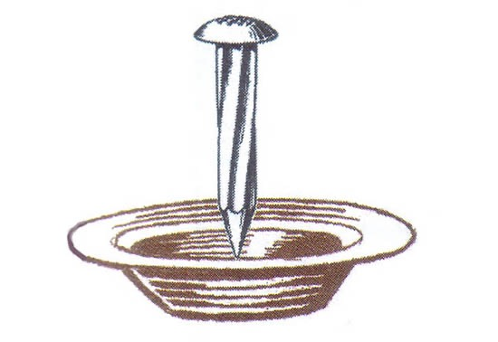

<!DOCTYPE html>
<html>
<head>
    <meta charset="utf-8">
    <title>
        Nailsoup
    </title>   
</head>

<body style="background-color: tan;"></body>
 <p><h1>Ingredients</h1></p>

 <p>
<ul>
<li> clean, large nail (optional, symbolic)</li>
<li>1 large onion, diced</li>
<li>2 cloves garlic, minced</li>
<li>2 medium carrots, chopped</li>
etc
 </ul>
</p>

<p><ol>
<li>Prepare the "Nail"</li>
<li>Sauté the Aromatics</li>
<li>Add the Vegetables</li>   
<li>Add the Liquid</li>
<li>Season the Soup</li>
</ol></p>

<p></p>


</body>


</html>